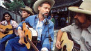

The Texas Hills
Experiencing the natural beauty and wonders of the Balcones Escarpment that bisects Texas, including wildlife wonders, the taos of Texas, Texas Hill towns.
By Sara Pacher
July/August 1988
Cream of the Country
Dear to the hearts of Texans.
By Sara Pacher
Photographs by Shelly Katz
In less than 30 minutes I'd left the bustle and fast traffic of Austin-Texas's dynamic state capital-far behind and entered a wide-open, undulating landscape embroidered with the pink of blossoming peach orchards. A turnoff on a county road at the tiny town of Dripping Springs led to a rolling, curving ride through charming countryside, where, although it was only early March, bright clumps of daffodils and wild redbud trees hinted at the spectacular show of wildflowers that would erupt during April, May and June. These same fields and roadsides will then be covered with far more than their share of the 5,000 wildflowers found in the Lone Star State: bluebonnets (the state flower), cherry red Drummond's phlox, bright yellow Engelmann's daisies, fiery Indian blankets, pink evening primroses, black-eyed Susans and purplish lemon mint, to name just a few. But in March, as throughout the winter, the most prominent color was that of dark green huddles of fat cedars thickly dotting the rocky, dun-colored hillsides. Old limestone ranch houses squatted long and low under stands of live oaks, which were just starting to shed last year's still-green leaves in preparation for a burst of new foliage when spring rains would green the entire landscape.
Rounding a curve, I had my first encounter with a resident of this unique and muchloved section of Texas: a man getting out of a pickup truck to check his mailbox. He gave me a friendly smile and a wave. I suddenly felt right at home-and that, to me, proved to be the primary attraction of the Texas Hills: a sense of being welcomed.
Bigger Than Life
The Balcones Escarpment is a great crack in the earth that bisects all Texas, separating the Rocky Mountains upland from the coastal lowland. In only one section of the escarpment, however, is the distinctive topography of a fault in evidence. Along its edge is an area known as the "Hill Country," ranging over a dozen or so small central Texas counties. I chose to spend most of my time in five of these: Gillespie, Blanco, Hays, Comal and Kendall.
People accustomed to the soaring heights of the Rockies, the Sierras or even the older, round-shouldered Appalachians might scoff at the reverent adoration given to these modest protuberances of central Texas, but to the natives of the flat, humid coastal lands and the seemingly endless high plains, plateaus and deserts that make up so much of the rest of the state, they are little short of a miracle. On closer look, the awe is justified.
Much of the region's magic is due to the abundance of water. Rivers, like the mighty Colorado and the roaring Guadalupe, wind through the hills and are dammed to form lakes for power production, fishing and recreation. Countless creeks, large and small, can be found flowing through the small valleys. Springs with romantic names like Jacob's Well gush millions of gallons a minute. Most of the creek beds and riverbeds are of limestone laid down approximately 140 million years ago, during the early Cretaceous period, when shallow Mesozoic seas covered the area. This limestone results in water as crystal clear and, in many places, as blue as that of the Caribbean, and, throughout the region, ancient marine-life fossils as well as the arrowheads and stone tools of former Native American residents can be found for the looking. This firm bedrock also makes for flash floods. On the night of June 5, 1985, 15 inches of rain in southern Blanco County sent an unexpected 42-foot wall of water through Hays County downstream, where it hadn't rained at all. Miraculously, no lives were lost, but damage was in the millions, and the flood's destructive force can still be seen in the twisted and broken limbs of the centuries-old cypress trees that line the banks of the Blanco River. (The possibility of floods must be kept in mind when buying or building in the region-and, during the rainy times, even when driving over normally safe water crossings.)
A portion of all the water from rain and springs eventually finds its way into the Edwards Aquifer, a hydrologically unique ground-water reservoir that is one of the state's most valuable natural resources. However, increased irrigation and the demands of development are necessitating additional surface water supplies in nearby San Antonio, and signs of toxic contamination of the aquifer's good water quality are also be ginning to surface. So far, any problems have been fairly localized. Keep in mind, though, that the region is a spelunker's paradise of magnificent limestone caves. (Natural Bridge Caverns-Texas's largest cave and a big tourist attraction, located between New Braunfels and San Antonio-was discovered only in 1960, and recent explorations in noncommercial Honey Creek Cave in Comal and Kendall counties have opened it to more than 76,000 feet, making it the state's longest cave.) This pocketed underground has the potential of allowing polluted water to travel many meandering miles, making its source difficult to trace. Since it's been said that Texas would split itself into at least five distinct states if it could only agree on which one would get the Alamo and the Hill Country, it's hoped the Texans' concern and deep appreciation for the region's crystal-pure water will protect it. (It should be noted that most Hill Country well water comes from underground sources unconnected with the aquifer, and some of it has a distinctly sulfurous taste.)
Wildlife Wonders
The abundance of water, riots of wildflowers and the generally mild climate of the region attract more than people. You can't be in the Hills a day without becoming aware of the area's bountiful bird life. Roadrunners perform their mating rituals in front yards, and the slopes are alive year-round with Carolina wrens, mockingbirds, chickadees, titmice, red-shouldered hawks, and blue and scrub jays. There also seem to be many more bright red cardinals here than around my North Carolina home, where the cardinal is the state bird. Winter visitors include rufous-sided towhees, yellow-rumped (or myrtle) warblers and spotted sandpipers. In the spring and summer months, migrants appear from the south. Among these are great crested flycatchers with reddish tails and bright yellow bellies, rose-red summer tanagers, sleek yellow-billed cuckoos and dazzling little hummingbirds. (Wimberley wildlife photographer Luke Wade estimates he provides nectar for some 300 hummingbirds that make his yard their summer home.) Other birds-such as orioles, geese and cranes-merely pass through on their way north to breed each spring.
Several varieties of bats also find the Texas Hills hospitable. For example, the summertime nursery colony of the migratory Mexican freetail bat in Bracken Bat Cave (Comal County) may number 20 million individuals. According to Bat Conservation International at the University of Texas in Austin, these beneficial creatures eat tons of insects nightly, and, contrary to popular belief, bats are not a major carrier of rabies. During the winter, when most of the bats are gone, their guano is mined and sold as fertilizer.
Among bigger mammals are coyotes and white-tailed deer. (Gillespie County claims the highest white-tailed deer population in the world, estimated at one deer per four acres.) Nine-banded armadillos rattle across yards and along roadways. Though buffalo roamed the region in the last century, and cotton was once raised here, it's mostly ranching country now. There's grassland for cattle and sheep and foliage for browsing goats. In fact, the area is part of the nation's leading Angora goat- and mohair-producing region, as well as part of a leading sheep and wool area.
The rich soil in Gillespie County nurtures commercial crops of peaches, plums, apples, pecans, blackberries, tomatoes, squash, bell peppers and persimmons. However, in much of the Hill Country, the soil is thin and alkaline, though vineyards and the resulting wineries are a new and vital industry. (Texas wines are amazingly fine, folks!) A long growing season, abundant water, a lot of compost and a strong fence to keep the varmints out can produce a spectacular home garden almost anywhere-that is, if you have the muscle and energy to dig up and remove the ubiquitous rocks, while keeping in mind the rattlesnakes and scorpions that also make the Hills their home.
The Taos of Texas
Aside from birds, bats and tourists, the Texas Hills seem to act as a magnet for art ists and craftspeople. Whether their talents attract the tourists or the tourists attract the talent is a chicken-and-egg question. Probably it's a bit of both. At any rate, the ratio of both nationally recognized and undiscovered artists, illustrators, sculptors, whittlers, writers, weavers, photographers, potters, candlemakers and stained-glass artisans to ordinary citizens is mind-boggling. Take, for instance, the warm, wacky and welcoming town of Wimberley that sits at the confluence of the Blanco River and Cypress Creek about 45 minutes from Austin and an hour from San Antonio.
An overwhelming percentage of Wimberley's local firms are boutiques, restaurants, antiques shops, craft stores and art galleries; the last are so filled with the works of area artists that Wimberley, with ample justification, calls itself "the Taos of Texas."
(While browsing in a Wimberley boutique, I heard the busy owner ask another woman to ring up a sale. "But I'm on vacation," the woman protested. "So what?" the store owner replied. "When you live in Wimberley, you're always on vacation.")
Technically, Wimberley can't even be called a town, because repeated, and probably needed, efforts to incorporate it have always been voted down. Therefore, no one really knows its actual population, and estimates range from 2,500 to 7,000, depending on where you draw the city lines. As a result of the lack of a tax base, services that would normally be handled by city government have been taken over by individuals and volunteer organizations. Major decisions are made at village meetings, and such events as the installation of Wimberley's first traffic light are hotly debated in the letters column of the local paper.
In fact, Wimberley has as dynamic and active a citizenry as I've ever encountered. Churches, clubs, action groups and other volunteers provide such things as firefighting, emergency medical services and a fine Senior Citizens Activity Center. They feed and clothe their needy citizens, test the water quality of the Blanco River and Cypress Creek, pick up litter, and recently organized to decentralize their school system. (Where most school systems have moved toward consolidation rather than decentralization, Wimberley decided to split away from the Hays County school district and educate its chil dren locally. The town recently completed a $2 million, 37,500-square-foot kindergarten through third grade school building.) The Chamber of Commerce takes charge of public garbage pickup and created a Wimberley Water Company. It once paid for streetlights, but 26 businesses and one resident recently "adopted" 27 streetlights and now pay for their use. The Chamber sponsors a "Funfest" each spring, a two-week-long series of parades, street dances and games to raise money for public projects. Likewise, the local Lions Club holds "Market Days" the first Saturday of every summer month on six acres called the Lions Field just outside of town. Each Market Day attracts hundreds of vendors and craftspeople and over 10,000 customers, and the stalls offer just about any art, craft and flea market item imaginable, including pets and livestock.
"Wimberley will 'club' you to death," one resident commented. "We have a lot of women named Dorothy in town, so there's even a Dorothy Club. They meet for lunch and whatnot."
Despite a lack of zoning or building codes (there is no sewer system, just septic tanks), Wimberley's architectural style is remarkably uniform (mostly stone or frontier-style wood), and businesses that put up offensive signs are boycotted.
Also, since this popular tourist destination has only one motel and one river resort, many residents have filled a need by turning their houses into bed-and-breakfast establishments, charging from $35 to $85 per night. For example, Leonard and Juanita Buxkemper, a people-loving couple who sold their business in Houston to move to the Texas Hills, have opened their $400,000 home to paying guests. While staying there, I had a first-hand taste of Texas's legendary hospitality, a graciousness that's truly as big as the state itself.
The Buxkempers aren't the only Houstonians who have found the mosquitofree, dry climate of the Hill Country attractive. Some estimate that 75% of Wimberley's population is from that economically hard-hit city, though I talked to residents from as far away as New York, Missouri, the West Coast and the British Isles. (I met only two Wimberley natives during my stay, but I was told that many families have been there for six generations.) It's partly this population of recent arrivals that makes newcomers feel welcomed here.
"I like what Wimberley does to people," says Chorine Wilson, the postmistress. "It lets them do what they want to do."
Other Texas Hill Towns
Unlike so much of the United States, where shopping malls and fast-food strips have made downtown shopping and socializing a thing of the past, the central sections of Hill Country towns are still alive and lovely. (This is also true of nearby San Antonio, the nation's tenth largest city, whose famous River Walk along the San Antonio River keeps its downtown humming late into the night.) Throughout the region, old buildings have been preserved or restored. Kendall County's small town of Comfort (pop. 1,460, and founded in 1854 by Ernest Altgelt, a German from Duesseldorf, where Cypress Creek meets the Guadalupe River, still has nearly 100 pre-1910 buildings within walking distance of the town's center. Comfort, in 1914, was the site of Texas's first ostrich farm, which died along with the craze for ostrich-feather fashions. Today, ostrich farming-for the sale of meat, leather and feathers-is making a comeback in the region. It was Comfort, too, that boasted the world's only armadillo farm. For several decades, Charles Apelt, a basket weaver, bred the animals and turned their shells into baskets, lampshades and other items. The ranch ceased operations only upon his death a few years ago.
Like most of Texas, the Hill Country reflects its Mexican heritage, but the strong influence of this region's German settlers is impossible to miss. It's still found in the place names, the architecture, the food, the festivals and even in the pre-barbed-wire stone fences that divide the landscape. Until World War II made it unpopular, the German language was widely spoken here.
New Braunfels (pop. 25,306), the county seat of Comal County, was established by German Prince Carl of Solms-Braunfels in his job as commissioner of the Adelsverein, a "Society for the Protection of German Immigrants in Texas," founded in 1842. In 1845, the prince purchased 1,265 acres on our country's shortest river, the beautiful three-and-one-quarter-mile-long Comal, fed by Comal Springs, one of the four biggest springs in Texas.
Today, New Braunfels is a lovely little city filled with parks, museums, German bakeries and restaurants, and old inns. Popular summer activities include tubing on the Comal and rafting on the nearby Guadalupe River. Four miles away, Gruene, settled by New Braunfels's overflow, started as a cotton-growing center that by 1882 had a mercantile store, lumberyard, beer garden and dance hall. It prospered until 1920, when the boll weevil and pink bollworm killed both King Cotton and the town. In the 1970s, however, tourist-trade entrepreneurs moved in and gave Gruene a new and delightful life that includes fine restaurants (one housed in the ruins of a cotton gin's brick boiler room that burned in 1922), an antique "mall" and a winery. The beer garden and dance hall, advertised as the oldest in Texas, are almost too popular.
But Prince Carl didn't stay around to enjoy the eventual success of his new colony. When his fiancee, Lady Sophia, princess of Salm-Salm, refused to come to Texas, he went back to Germany to marry her and never returned. By this time, the Adelsverein's coffers were empty. Nevertheless, thousands of Germans, having heard often-exaggerated tales of the wonders of this part of Texas, immigrated here. Overcoming Indian raids, outlaws and other perils and hardships, they founded prosperous settlements throughout the region. One of my favorites is Fredricksburg (pop. 7,423), the county seat of Gillespie County. It's located just a few miles from the Lyndon B. Johnson National Historic Site-part of the LBJ Ranch-and the LBJ State Historical Park. (The 36th president's boyhood home and the original Johnson Settlement are at Johnson City, pop. 914, county seat of adjoining Blanco County.)
From the replica of Fredricksburg's first building, the octagon-shaped Vereins Kirche, to the tiny "Sunday Houses" (weekend homes that out-of-town ranchers built so they could conduct business on Saturday and attend church on Sunday), the town is rich in Bavarian charm. The Admiral Nimitz Center was originally a hotel built in 1852 by the grandparents of Admiral Nimitz of World War II fame. This steamboat-shaped structure was once touted as the last "civilized outpost" for settlers headed west. It now houses the Museum of the Pacific War, with the Garden of Peace, a gift from the people of Japan, on the same grounds.
Fredricksburg shops are filled with handicrafts; its restaurants and bakeries with dark German ales, Wiener schnitzel and strudel. The town's unique Easter Fires Pageant is a re-enactment of the time when Fredricksburg's founder, John O. Meusebach (formerly Baron Ottfried Hans Von Meusebach), was negotiating a peace treaty with the surrounding Comanche Indians. A pioneer mother, whose husband was away at the Easter eve treaty meeting, calmed her children's fears by telling them that the flaring bonfires encircling the settlement were made by the Easter bunny boiling eggs to dye and place in their baskets on Easter morning. Actually, the fires signaled the Comanches that a treaty had been agreed upon.
The Gillespie County Fair, which will celebrate its 100th anniversary in Fredricksburg this August, is the state's oldest continuous fair, and the town's unrivaled Oktoberfest is only one more of its many festivals. Fredricksburg attracts over 400,000 visitors a year, and this influx, as well as the constantly increasing number of outsiders who want to settle in the Texas Hills, prompted one resident, when she discovered I was writing an article on the area, to plead, "Don't forget to mention the snakes, scorpions, flash floods and cedar fever." (Though the Hill Country climate has, from the beginning, been touted as ideal for sufferers of all types of lung problems, the pollen released from the region's numerous cedar trees causes allergic reactions in some people.)
While many of the Hill Country's old towns thrive, other once-active settlements with names like Welfare, Buda and Driftwood (the last known for one of Texas's most famous barbecue establishments, the Salt Lick) are charming ghosts of their former selves. Even the small, vital town of Blanco (pop. 5,300), where you can still get made-from-scratch doughnuts at the Blanco Bowling Club Cafe, has its reminder of a more distinguished past. In the town square stands a huge, abandoned limestone courthouse with an elaborate mansard roof. Built in 1885, it was the town's pride and joy until the county seat was moved to Johnson City in 1891.
Of all these dozens of remnants of Hill Country history, I particularly liked Fischer (pop. 20) on the Little Blanco River in an area of vintage stone houses, barns and fences. Its corrugated-steel store and post office was built in 1902, and stepping inside takes one on a trip to another era. Ancient cracker and coffee tins and boxes of fossils rest on old counters surrounding a woodburning stove. To one side, a black-enameled safe bears the name of the town's founder, Herman Fischer, in gilt letters; since the post office was opened in 1876, the postmaster has always been named Fischer.
At the Fischer Bowling Hall, ninepins are still set up by pin boys, and at the Fischer Dance Hall next door, which was used in the filming of Willie Nelson's movie Honeysuckle Rose, the wood floors have been put to toe-tapping, foot-stomping use ever since the hall was built by a one-eyed carpenter in 1898.
The Texas Turnaround
Just as so many of these little settlements have had their booms and busts, in the last few years much of the state of Texas has suffered an economic downturn that some compare to the Great Depression. In fact, the effects are hard for those of us in more prosperous parts of the nation to even imagine. These economic woes have spilled over into the Hill Country, where real estate companies frequently advertise foreclosed properties, and many people selling homes have cut their asking prices nearly in half. It's definitely a buyer's market in housing here. Keep in mind, though, that jobs are few and wages are typically low. Many residents have to commute to San Marcos (the county seat of Hays County, pop. 25,286), Austin or San Antonio to find work. Those contemplating a move here, who dream of living off the land, should be aware that late spring frosts, battering hail and long dry spells frequently wipe out crops, and, as noted, cloudbursts rip the valleys with unexpected floods.
By the same token, birds sing, wildflowers bloom, deer pause to peruse you before crashing through the brush, fish hover in creeks and rivers that run enchantingly clear and cool through the rocky landscape, and, most important of all, people smile and say hello. Come to think of it, they laugh a lot, too.
|
Livestock is big business here, but dramatic canvases of wildflowers and the pristine Guadalupe River help boost tourism. |
Hill people: Vintner Peter Oberhelman (right) and ""The Wimberley Whittler"", Dusty Ellis (above). |
Both the architecture and the entertainment in the Texas Hill Country lean heavily on tradition. |
|
Water is relatively abundant in the Hills, both for agriculture and recreation. |
 |
|
|
|
|
 |
|
|
|
|
|
|
|
 |
|
|
|
|
|
|
|
|